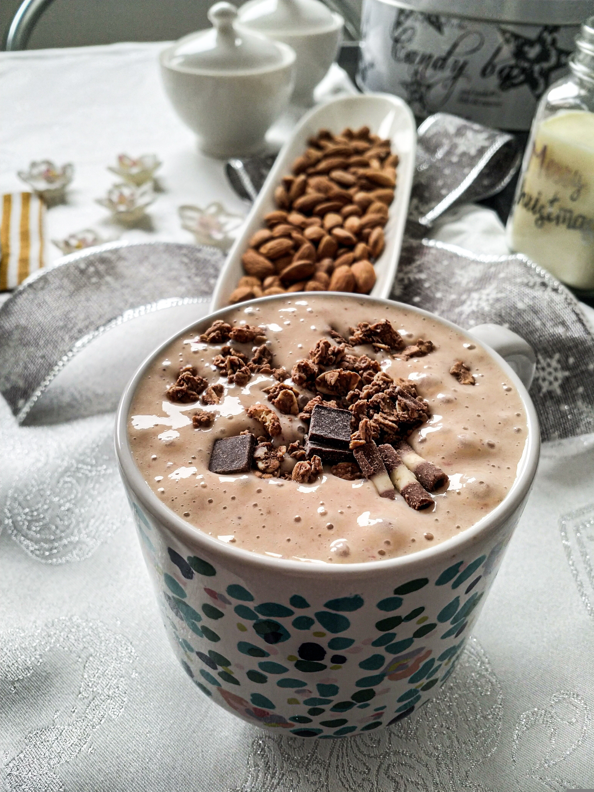

Protein Smoothie

Description
Looking for a good protein meal that can be prepared in no time...
Well here it is! A Berry Chocolate protein smoothie.
Here we explain what the ingredients are and how to prepare it
in 5 minutes.
Ingredients
- 6 Fluid ounces almond milk
- 3 Ounces frozen strawberries
- 2 Ounces frozen blueberries
- 1 Scoop chocolate protein powder
- Sugar-free whipped topping (optional)
- Sugar free chocolate chips
Steps
- Add almond milk, strawberries, and blueberries to a
high-powered blender. Blend on highest speed for 45 seconds.
Turn blender off; add protein powder. Blend for 15 seconds more.
- Pour mixture into a glass, top with sugar-free whipped topping
and sugar-free chocolate chips.
Home